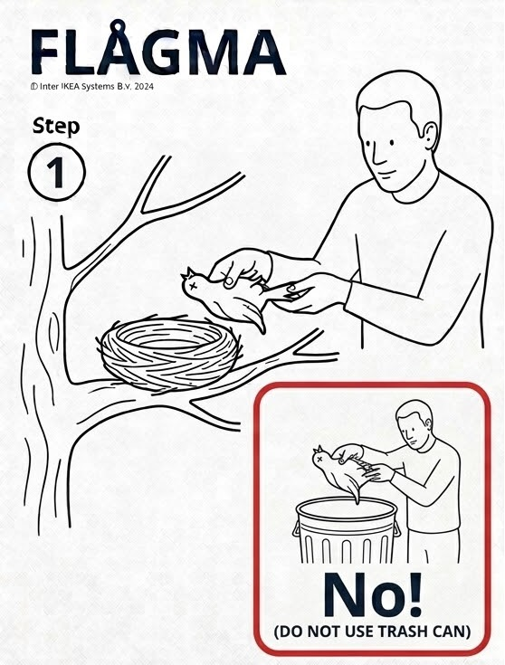
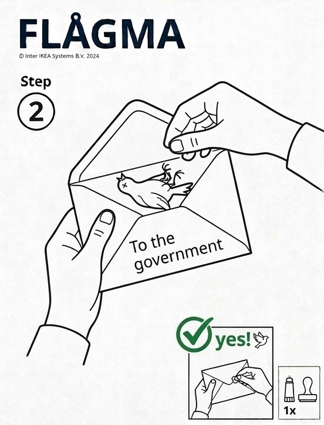
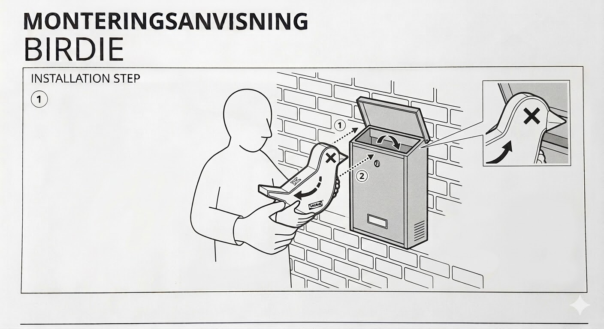
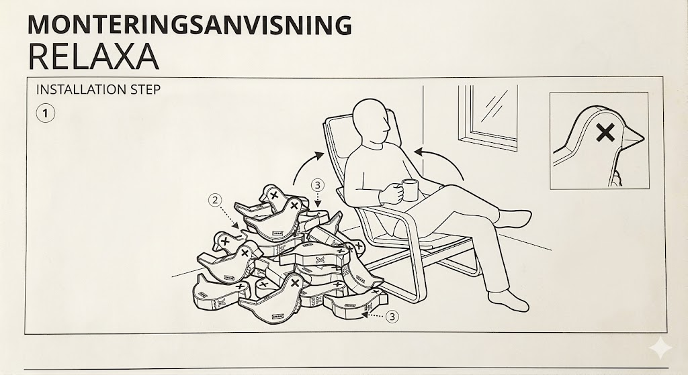
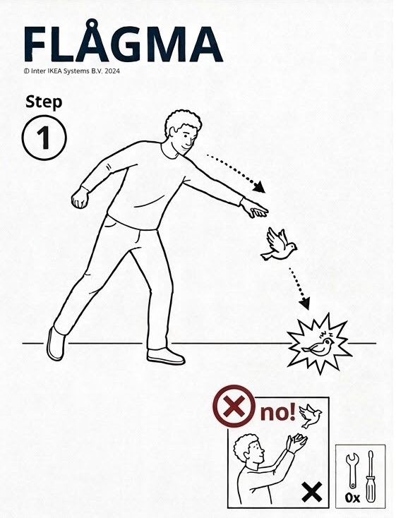

Section 01
Introduction & Overview
This guide outlines a convenient and free way to express discontent in the modern era.
My name is Leonardo Millet Grillmaster2.0 and I have used this method for years to express discontent with myself, coworkers, policies and more. I stand by it, and you will, too, once you see its effectiveness!
Section 02
What You'll Need
Only a handful of components are required for this guide, making it an ideal activity for adults and children alike!
-
APostage for a Small Parcel
(optional if delivery is not necessary)
-
BA Mid-Sized or Larger Envelope or Box
Improvisation is encouraged!
-
CA Dead Bird
Species of bird only matters if you need to match it to a parcel size.
Section 03
Step-by-Step Instructions
Follow the below steps to find satisfaction through expression!
-
1Step 1: Find Required Components
The first step is to acquire the requisite components to complete this process. You can try checking in or around trees, at your local retailers and the US postal service offices depending on the components needed.
-
2Step 2: Combine Required Components
Deposit your bird into an envelope or box large enough to contain it. Ensure it is tightly sealed, preferrably air-tight!
-
3Step 3: Arranging Delivery
Using your recursive hand deposit the parcel into a nearby mailbox. Ensure you provided the correct address and proper postage!
-
4Step 4: Relax!
At this point your discontent has been adequately expressed! Don't you feel better? If not, feel free to repeat these steps as many times as necessary.




Section 04
Making Your Own Dead Bird(s)
If you are unable to source a dead bird and only have access to live avians, feel free to consult the below infograpic for details on how to manufacture your own, parcel-suitable fowl.

It is important to remember that live birds do not follow the same rules as their deceased counterparts, namely gravity. Ensure that you do not simply "drop" the bird, as it will not achieve the requisite velocity for this guide and may, in fact, accelerate in an entirely incorrect direction. Instead, open your hand while making a swift, downward motion while holding the bird as shown.